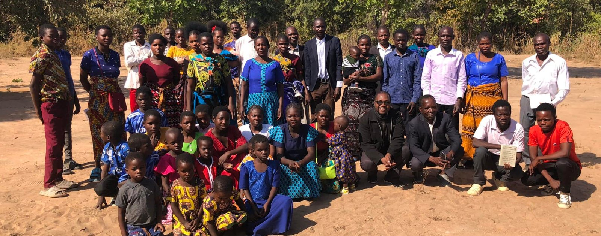

Jars of Clay Foundation - Malawi
The Jars of Clay Foundation – Malawi was formed to empower the Associate Reformed Presbyterian Church of Malawi through an integrated approach to ministry.
Inspired by 2 Corinthians 4:7, we recognize that while we are “jars of clay”– fragile and human – the all-surpassing power we carry belongs to God.
Our Mission
To foster the long-term health and growth of Malawian church plants by providing sound theological education and practical entrepreneurship training leading to self-sustainability. We believe a healthy church is one that is both spiritually vibrant and financially sustainable.
Our Vision
We envision a Malawi where every ARPC church plant is led by a well-trained pastor, supported by a self-sufficient congregation, and equipped with the literature and resources needed to transform their community for Christ.
Treasure in Earthly Vessels
Dear Friends and Partners,
Welcome to the digital home of the Jars of Clay Foundation – Malawi. In his second letter to the Corinthians, the Apostle Paul reminds us that we have "this treasure in jars of clay, to show that the surpassing power belongs to God and not to us." In Malawi, clay is a part of daily life – it is common, fragile, and humble. Yet, when it holds something precious, its value is transformed.
The Associate Reformed Presbyterian Church of Malawi is growing rapidly. With that growth comes the urgent need for leaders who are not only biblically sound but also equipped to lead their congregations toward a future that is financially sustainable.
Our foundation was born out of a desire to see the Malawian church thrive without permanent dependence on outside aid. By integrating Reformed theology with entrepreneurial training, we are helping pastors plant churches that can stand on their own feet, supported by the fruits of their own labor and the faithfulness of their local communities.
Whether you are listening to our “Chuma Mzikho Zadothi” broadcast, reading our literature, or considering a partnership from across the ocean, we invite you to join us. Together, we are working to ensure that the light of the Gospel shines brightly in every corner of Malawi.
For His Kingdom,
JJ Matandika
Director-Pastor, Associate Reformed Presbyterian Church of Malawi (ARPC)
Our Purpose and Role
The purpose of the Jars of Clay Foundation – Malawi, a nonprofit religious organization, is to provide practical support to the existing and growing list of churches in the ARPC of Malawi. Our passion is to build healthy church bodies through various avenues as God leads and resources are provided:
- Promote the sustainability and growth of local churches through agricultural initiatives
- Provide ministry training and leadership development to current and aspiring church leaders
- Engage in related charitable activities consistent with the doctrine and principles of the Christian faith
Currently, the foundation is raising and managing funds for the acquisition of land near existing churches, the procurement of farm implements, seeds, and necessary agricultural inputs for the establishment of farming projects. The proceeds from these agricultural activities will be used to support the financial needs of the churches, enhance the welfare of the congregants, and strengthen the surrounding communities.
In summary, all activities of the Foundation are carried out exclusively for religious, charitable, and educational purposes within the meaning of Section 501(c)(3) of the Internal Revenue Code.